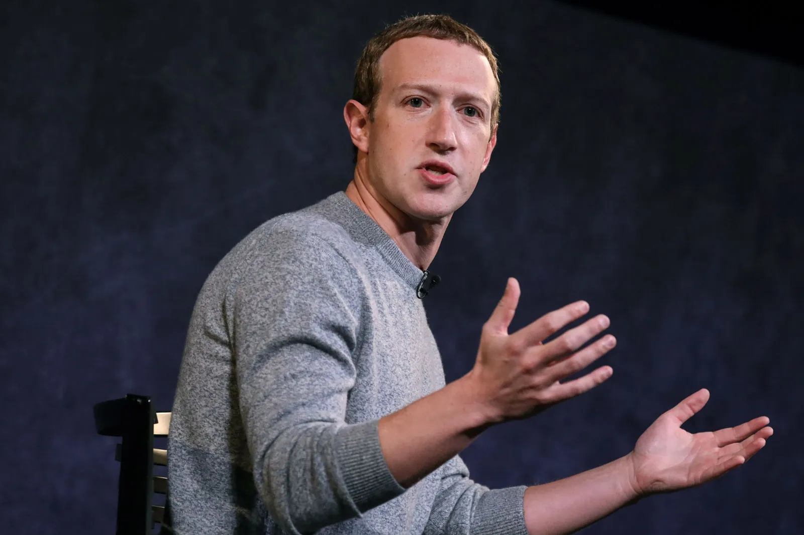

Algorithms within social media platforms are far from perfect. Every platform has their complaints about what the algorithm is doing wrong and what can be changed. As algorithms within a platform are utilized for everyone in a broader sense, some users may show content that may not be acceptable. Social media platforms are constantly changing and tweaking the algorithm to be as perfect as possible to suit the users needs, but problems will always persist.
Over the last couple years Facebook has been accused of providing controversial content by their algorithms. Many critics believe that the algorithm was increasing outrage, divisiveness and political polarization. Facebook denies doing this on purpose but when we realize that controversial content gets more engagement than normal content, we can see why Facebook may have done it. Protecting users should be the number one priority when making these algorithms but many times, the revenue is more important than the user.
Protecting users from potentially harmful content is what makes or breaks how well an algorithm is constructed. Tik Tok has been criticized for leading users down a “content rabbit hole.” Essentially what this means is that the algorithm constantly brings up very similar videos again and again so users could potentially be bombarded with harmful content. This rabbit hole that users go down maintains interest and time spent for longer periods than if the content is potentially changing. Although Tik Tok has said that they would work to reduce this problem, creators will always find a new way to exploit the next flaw that comes in the new algorithm update.
{kind=link}
{kind=link}